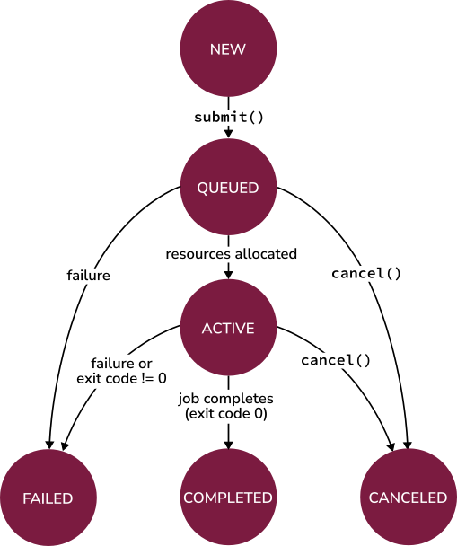

User Guide¶
PSI/J Python is an implementation of the PSI/J specification, which is an API for abstracting HPC job management over local resource managers (LRMs), such as Slurm, LSF, and PBS.
Overview of the PSI/J API¶
The PSI/J API can be logically split into two parts: 1. The core classes, which describe jobs in an abstract fashion, independent of how and where they are executed
2. Executors and launchers, which implement specific mechanisms of executing jobs, such as running them on a SLURM cluster.
Core classes¶
The essential core classes are:
JobRepresents an abstract job which has a formal specification represented by a
JobSpecinstance as well as aJobStatus, which indicates, for example, whether the job is running or completed.JobSpecFormally specifies all static aspects of a job, such as the executable to run, the arguments, input/output redirection, as well as LRM attributes (
JobAttributes) and cluster resources needed (ResourceSpec).JobAttributesDescribes LRM attributes, such as the queue where the job is to be sent to or a project name that is used for accounting purposes.
ResourceSpecThe resource specification indicates the resources required by the job, such as the number of nodes. The
ResourceSpecclass is an abstract class with multiple possible concrete implementations. However,ResourceSpecV1is currently the only concrete implementation.
JobStatusThe
JobStatusclass contains information about the position of the job in its lifecycle and consists of aJobStateand various metadata associated with state transition events.
The following diagram highlights similarities between components of a PSI/J job, a typical shell executable invocation, and a standard LRM job:

Executors and Launchers¶
Job executors implement the specific mechanisms
needed to run jobs. For example, the local job executor can be used to run
jobs locally, by forking a sub-process, whereas the Slurm executor can be
used to run jobs through the Slurm resource manager. The PSI/J Python library
currently provides the following executors:
cobalt: ALCF’s Cobalt job scheduler
local: run jobs locally
lsf: IBM Spectrum LSF
pbs: Altair’s PBS-Professional and variations, such as OpenPBS.
slurm: Slurm Scheduling System
For a complete list of executors provided by this library, please see Available Executors.
Instances of the Launcher class are used
indirectly (i.e., user code does not directly instantiate Launcher objects;
this is done automatically by the JobExecutor based on information in the
JobSpec) to tell the JobExecutor how to launch the job. The term
“launch” is specific to LRMs and generally represents the mechanism used to
start a parallel job on multiple compute nodes from the job’s lead node once
the job resources (compute nodes) are allocated by the LRM. Examples of
launchers include mpirun, srun, ibrun, etc.
The Job Lifecycle¶
The basic flow of a PSI/J Job is as follows:
Instantiate a
Jobobject with an appropriateJobSpecand relevant attributes and resource specification.Obtain a
JobExecutorinstance usingget_instance().Submit the
Jobinstance to theJobExecutorinstance.The status of a job can be monitored using either an asynchronous callback mechanism or, synchronously, using
wait().
The following sections provide concrete details on how these steps can be achieved.
Creating a Job¶
A Job can be created by instantiating a psij.Job object together
with a psij.JobSpec, which describes the details of the job:
job = Job(JobSpec(executable='/bin/date'))
The shell equivalent of this job is:
$ /bin/date
Specifying the Job Details¶
The example above creates a Job that will run the /bin/date executable.
A number of other Job details can be specified:
The arguments to be passed to the executable.
The environment variables visible to the job.
Redirection of input, output, and error streams.
Cluster resource requirements for the job’s execution.
Various parameters specific to the LRM.
Job Arguments¶
The executable’s command line arguments to be used for a job are specified as
a list of strings in the arguments attribute of the JobSpec instance.
For example, our previous /bin/date job could be changed to request UTC
time formatting:
job = Job(
JobSpec(
executable='/bin/date',
arguments=['--utc']
)
)
JobSpec properties can also be modified directly after the JobSpec
instance is created:
spec = JobSpec()
spec.executable = '/bin/date'
spec.arguments = ['--utc']
job = Job(spec)
The shell equivalent for both of these jobs is:
$ /bin/date --utc
Environment Variables¶
Environment variables that are accessible by the job can be set using
the environment attribute of psij.JobSpec, which is a dictionary
with str keys and values:
job = Job(
JobSpec(
executable='/bin/date',
environment={'TZ': 'America/Los_Angeles'}
)
)
Environment variables set this way will override prior values of the same environment variable. The shell equivalent of the above job is:
$ TZ=America/Los_Angeles /bin/date
Redirection¶
The stdin_path attribute of psij.JobSpec can be used to specify a
standard input stream for the job, whereas the stdout_path and
stderr_path attributes can be used to redirect the output and error
streams, respectively. The values should be pathlib.Path objects
(although strings are also accepted). It is recommended that the paths be
absolute to avoid ambiguities. An example of output/error redirection is shown
below:
job = Job(
JobSpec(
executable='/bin/date',
stdout_path=Path('/tmp/date.out'),
stderr_path=Path('/tmp/date.err')
)
)
The shell equivalent of this example is:
$ /bin/date 1>/tmp/date.out 2>/tmp/date.err
Job Resources¶
A job submitted to a cluster is allocated a specific set of resources to run
on. The number and type of resources can be defined through a resource
specification, represented by the psij.ResourceSpecV1 class, and
attached to the resources attribute of psij.JobSpec. The
resource specification (V1) supports the following attributes:
node_countAllocates that number of compute nodes to the job.
processes_per_nodeOn the allocated nodes, executes that number of processes.
process_countThe total number of processes (MPI ranks) to be started.
cpu_cores_per_processThe number of CPU cores allocated to each launched process.
gpu_cores_per_processThe number of GPU cores allocated to each launched process.
exclusive_node_useWhen this boolean flag is set to
True, PSI/J will ask the LRM to ensure that no other jobs, whether from the same user or from other users, will run on any of the compute nodes allocated for this job. If this flag is set toFalse, the LRM will use a default setting.
The meaning of certain terms in the resource specification, such as
CPU core, may depend on how the LRM is configured for that system. For,
example a CPU core may refer to a physical core or to a thread in the sense of
Intel’s Hyperthreading or AMD’s Simultaneous Multi-Threading technologies.
A resource specification does not need to define all available attributes. In fact, an empty resource spec is valid as it refers to a single process being launched on a single cpu core.
The following snippet creates a job that requests 2 compute nodes with 4 processes on each node, for a total of 8 processes:
job = Job(
JobSpec(
executable='/bin/date',
resources=ResourceSpecV1(
node_count=2,
processes_per_node=4
)
)
)
Note
All processes of a job will share at most one MPI communicator
(MPI_COMM_WORLD), independent of their placement, and the term rank
(which usually refers to an MPI rank) is thus equivalent to that of
process. Depending on the job launcher used (e.g., mpirun), jobs
may not get an MPI communicator.
Job Launching¶
In principle, one of the main jobs of a PSI/J JobExecutor, the submission,
stops when the LRM allocates resources for the job and an executable is started
on the lead node of the job (the precise nature of this lead node or its
exact name will vary from system to system, and head node or service node
are also common.)
In order to run the job an all the allocated nodes, the job needs to be
launched using a launcher, such as mpirun. The launcher is the
entity that, when invoked on the lead node, starts all of the job’s processes
on the compute nodes. Recommendations specific to the cluster where the job is
launched should be followed when selecting a launcher.
To specify the launcher to be used, use the launcher property of
JobSpec and set it to one of the available launchers, such as
mpirun. For a complete list of launchers, please see
Available Launchers.
Once a job is launched, the job executable is run in process_count
instances, distributed on the compute nodes according to the job’s resource
specification. However, it is often desirable to run certain commands that are
needed to configure the job environment only once rather than as part of each
process. This is the case with module load xyz commands, which can be very
resource-demanding if run as part of each job process. Such commands are better
invoked before the job is launched. The PSI/J JobSpec provides
the pre_launch and post_launch properties, which are paths to user
scripts that are guaranteed to be invoked only once for a job, before the job
is launched and after all the job processes complete, respectively. The
pre_launch and post_launch scripts are run on the lead node of the job
and are sourced. That means that any environment variables exported by the
pre_launch script will be made available to the job.
Module Loading¶
A typical and frequent task that pre_launch is supposed to address is that
of loading environment modules. Running
module load is somewhat resources expensive and doing so on each compute
node for a large job can exacerbate this. Consequently, the recommended way
of loading modules is on the lead node, before the job is launched, as the
following example shows:
ex = JobExecutor.get_instance('local')
spec = JobSpec('/bin/bash', ['-c', 'xmodule is-loaded test'])
spec.pre_launch = pre_launch_sh_path
job = Job(spec)
ex.submit(job)
status = job.wait()
where the contents of pre_launch.sh is
#!/bin/bash
xmodule load test
Scheduler Information¶
Information specific to LRMs, like queues/partitions, runtime, and so on,
can be specified using the attributes property of JobSpec
and an instance of the
JobAttributes class:
job = Job(
JobSpec(
executable="/bin/date",
attributes=JobAttributes(
queue_name=execparams.queue_name,
account=execparams.account
)
)
)
executor.submit(job)
where QUEUE_NAME is the LRM queue where the job should be sent and ACCOUNT is a project/account that may need to be specified for accounting purposes. These values generally depend on the system and allocation being used.
Submitting Jobs¶
When a Job is instantiated, it is in the
JobState.NEW state. That is,
job.status.state == JobState.NEW. A job in the NEW state can be
submitted to an executor. In order to obtain an executor instance, the
JobExecutor.get_instance static method
can be used with an executor type as parameter. The executor type can be any of
the names returned by
JobExecutor.get_executor_names.
The resulting JobExecutor instance can then be used to submit any number of
new jobs. Submission of a job is done by calling the
submit() method on a JobExecutor instance:
ex = JobExecutor.get_instance('local')
job = Job(JobSpec(executable='/bin/date'))
ex.submit(job)
The JobExecutor implementation will translate all PSI/J API activities into
the respective backend commands and run them on the backend, while at the same
time monitoring the backend jobs for failure, completion or other state updates.
After submitting a job to a LRM, such as Slurm, the new job will be visible in the LRM queue.
A given JobExecutor instance can be used to submit multiple jobs:
spec = JobSpec('/bin/sleep', ['5'])
job_1 = Job(spec)
ex.submit(job_1)
job_2 = Job(spec)
ex.submit(job_2)
The submit() call is asynchronous. Its successful
return implies that the job has been accepted by the backend or LRM for
execution. It does not indicate completion of the job.
Managing Job State¶
In the above examples, jobs were submitted and left to run without waiting for
them to complete. The simplest way to check for what the job is doing is to
query its status property and the state property therein.
However, it is rarely the case that a direct query of the job state is useful
in realistic scenarios.
Synchronous Waits¶
A simple way to ensure that a job completes is to wait for it
using the wait() method:
status = job.wait()
assert status is not None
assert status.state == JobState.COMPLETED
The wait() method suspends execution of the current thread until the job
enters a final state, which is a state that from which no more state changes
are possible. That is, once a job is in a final state, its state cannot change
any further. The wait() method returns a psij.JobStatus object
whose state property can be queried to find out exactly which state caused
the wait() call to return. In the above example, we expect the job to have
completed without error.
One can also wait for other states, such as when the job’s resources are allocated and the jobs moves from being queued to an active state:
status = job.wait(target_states=[JobState.ACTIVE])
assert status is not None
assert status.state == JobState.ACTIVE
The check for the actual state may be necessary, since the wait() method
returns automatically when the job can make no more progress, such as when the
job has failed.
The following diagram shows all the possible PSI/J states and all the possible transitions.
Note
The state of the job as returned by the wait() method is the state that
caused the wait() call to return. It may or may not match the state
obtained by subsequently querying the job’s status property, even when
the former state is a final state, since threading can interfere with the
perceived ordering of events and there is generally no thread-universal
timeline without enforcement of critical sections by user code. In order to
get a consistent timeline of state changes, callbacks should be used.
Note
A COMPLETED state requires the job to have completed
successfully (i.e., with a zero exit code). A FAILED
state can be reached either when the job returns a non-zero exit code or
when the LRM encounters a problem either internally or with the job. To
distinguish between the two possibilities, the
exit_code property of JobStatus can be inspected.
Canceling Your Job¶
Once a job is submitted, it can be canceled by invoking the
cancel() method (or, alternatively,
cancel()).
Status Callbacks¶
Using wait() to suspend the current thread until a job completes does not
scale very well with large numbers of concurrent jobs that may have complex
dependencies, since every concurrent wait() call requires a separate thread
and threads tend to be resources that are significantly more costly than what
is otherwise associated with a Job object.
The preferred means of monitoring and reacting to job state changes is through
callbacks. Callbacks can be added either to a specific job, using the
set_job_status_callback() to monitor the status of that job or
set_job_status_callback() to monitor the status of
all jobs managed by that executor instance.
An example is shown below:
ex = JobExecutor.get_instance('local')
job = Job(JobSpec('/bin/date'))
def callback(job: Job, status: JobStatus) -> None:
if status.state == JobState.ACTIVE:
print('Job %s is running' % job)
elif status.state.final:
print('Job %s has finished' % job)
job.set_job_status_callback(callback)
ex.submit(job)
Detaching and Attaching Jobs¶
In certain circumstances it may be necessary to monitor the status of a job
from a process different than that in which the job was submitted. This means
that the Job instance that was used to submit the job is not available in
the process where its status needs to be queried. The PSI/J Python library
provides a mechanism that allows one to “re-connect” to a job that was
submitted in a different process.
When a job is submitted and enters the QUEUED state, its
native_id property becomes valid. The native_id
represents an identifier known to the backend/LRM and is unique to a given
backend/LRM and independent of the process that launched the job. A subsequent
process could then instantiate a new Job object and use the
attach() method to re-connect to the same backend job.
An example of how this mechanism can be used is shown below:
ex = JobExecutor.get_instance('local')
job = Job(JobSpec('/bin/sleep', ['10']))
ex.submit(job)
assert job.native_id is not None
print(job.native_id)
ex = JobExecutor.get_instance('local')
native_id = sys.stdin.read().strip()
job = Job()
ex.attach(job, native_id)
# The status may not be updated immediately after the attach() call, so
# we wait until we get a non-NEW status.
status = job.wait(target_states=[JobState.QUEUED, JobState.ACTIVE, JobState.COMPLETED])
print(status)
Running the above example involves piping the output of the submit.py
script, which contains the job’s native_id to the attach.py script:
$ python submit.py | python attach.py
Note
The attach() call does not ensure that the job
status is updated before the call returns and, for efficiency reasons, most
current JobExecutor implementations do not update the status
until later. In order to ensure that the job state has been updated after
the job is attached, a call to wait() with
target_states=[JobState.QUEUED] is recommended. This call waits for the
job to be in the QUEUED state or any subsequent
state, effectively making the call a wait for any
non-NEW states.
Note
There is no particular requirement that the native_id value supplied to
attach() be obtained from the
native_id property. Concrete implementations of
JobExecutor can document what the native_id represents.
For example, the LRM executors in PSI/J Python use LRM IDs for the
native_id. Consequently, an ID obtained directly from the LRM can be
used for the attach() call.
Note
Depending on configuration, many LRMs remove completed or failed jobs from their queue after a certain (typically short) interval. If a job is attached to a native id representing a LRM job that has been removed from the queue, current PSI/J job executors assume that the job has been completed. An attempt is made to detect whether the job was launched through PSI/J executors, and it may be possible, as a result, for the executor to retrieve the job exit code and distinguish between a failed and completed job, but that is not guaranteed.
Note
When a job is attached to a native_id, current executors do not update
the JobSpec to reflect the LRM job represented by the native_id and
is, instead, left empty.


{kind=link}